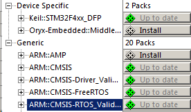
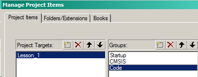
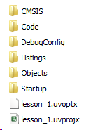
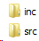
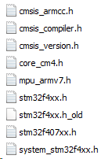
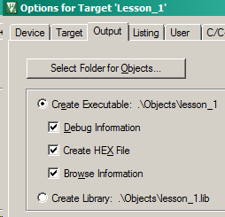
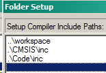
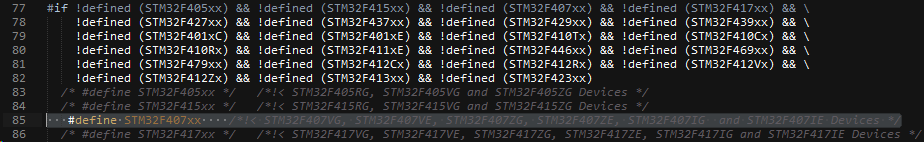

В кейле делаем New Project и создаем новый проект.
Выбираем камень (в моем случае это STM32F407VGTx) и жмем Ok.
В следующем окне проверяем, чтобы были установлены следующие компоненты:

Получаем пустой проект.
Через конекстное меню Target 1 открывает Manage Project Items.
Переименовывем папки и создаем дополнительные:

Startup - для первоначальной настройки камня;
CMSIS - для библиотеки регистров;
Code - для основной программы.
Точно такую же структуру воспроизводим в нашем рабочем каталоге:

В папках Code и CMSIS создаем еще по две папки для заголовчных и сполняемых файлов:

Качаем библиотеку с сайта ST: STM32F4xx_DSP_StdPeriph_Lib_V1.8.0
С болью и где попало как аццкий сатана ищем следующие файлы и добавляем их в папки:
CMSIS/inc

CMSIS/src
system_stm32f4xx.c
Code/inc
main.h
Code/src
main.c
Startup
startup_stm32f40xx.s
Почти все файлы для CMSIS лежат в директории, котоаря была указана для установки библиотек keil'ом. В моем случае это:
C:\Keil_v5\ARM\PACK\ARM\CMSIS\5.1.1
После чего подключаем исполняемые файлы к проекту:
В настройках включаем генерацию HEX файлов:

На вкладке С/С++ находим поле:

Через него добавляем пути для наших файлов:

В main.c пишем:
#include "stm32f4xx.h"
int main(void)
{
while(1)
{
}
}
Далее идет в файл stm32f4xx.h и редактируем его. Раскоментируем строку с нашим камнем:

Компилируем. Должно быть без ошибок.
Попробуем поработать со светодиодами.
Для этого необходимо подключить тактирование периферии. Смотрим в Reference Manual (RM) и ищем RCC clock enable register.
Какую именно линию необходимо тактировать (APB1 или APB2)...
Смотрим в Board Manual (BM) и видим, что пользовательские LED подключены к пинам PD12, PD13, PD14, PD15.
Открывает Datasheet и ищем принадлежность указанных портов к конкретной шине. В данном случае это AHB1.
Следовательно в RM смотрим раздел RCC AHB1 peripheral clock register (RCC_AHB1ENR).
Включаем:
RCC->AHB1ENR |= RCC_AHB1ENR_GPIODEN; //enable RCC for PortD
Затем необходимо пины с 12 по 15 переконфигурировать на выход.
Смотрим в RM раздел с GPIO.
За режим отвечает регистр MODER. Выходной режим устанавливается значением 01 в соответствующие биты:
GPIOD->MODER = 0x55000000; //0b0101.0101 0000.0000 0000.0000 0000.0000
Включаем Push-Pull с помощью регистра OTYPER:
GPIOD->OTYPER = 0;
Выбираем скорость через OSPEEDR:
GPIOD->OSPEEDR = 0;
За состояние порта (0/1) отвечает регистр ODR:
GPIOD->ODR = 0; //0 on all pins
Получается подобное:
#include "stm32f4xx.h"
int main(void)
{
RCC->AHB1ENR |= RCC_AHB1ENR_GPIODEN; //enable RCC for PortD
GPIOD->MODER = 0x55000000; //0b0101.0101 0000.0000 0000.0000 0000.0000
GPIOD->OTYPER = 0; //push-pull enable
GPIOD->OSPEEDR = 0; //low speed
//GPIOD->ODR = 0; //0 on all pins
GPIOD->ODR = 0xF000; //turn on all LED
while(1)
{
}
}
Но измененять состояние порта можно и через регистр BSRR. С его помощью операция выполняется на 1 такт быстрей, чем с ODR, т.к. не проверяется текущее значение порта.
В регистровую половину BR мы пишем, если хотим сбросить бит, в BS - установить.
GPIOD->BSRR = 0xF000; //turn on all LED
GPIOD->BSRR = 0xF0000000; //turn off all LED
Или
GPIOD->BSRR |= GPIO_BSRR_BS13; //turn on 13 LED
GPIOD->BSRR |= GPIO_BSRR_BS15; //turn on 15 LED